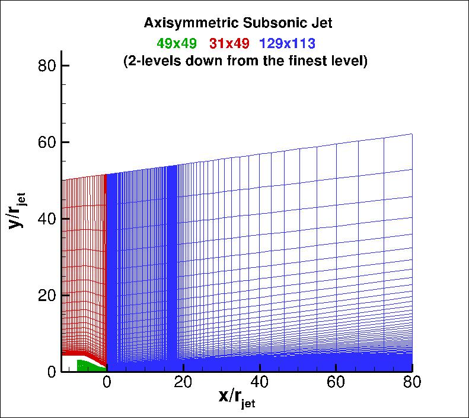

Public Access (formerly Langley Research Center)Turbulence Modeling Resource |
Return to: Axisymmetric Hot Subsonic Jet Case Intro Page
Return to: Turbulence Modeling Resource Home Page
Grids - Axisymmetric Hot Subsonic Jet Case
Note that these grids are identical to the grids
for the
Axisymmetric Subsonic Jet Case.
A series of 4 nested grids
are provided. Each is made up of 3 zones. Each grid has been scaled relative to the jet
exit radius (i.e., rjet=1).
All grid files have been gzipped.
Each coarser grid is exactly every-other-point
of the next finer grid, ranging from the finest 193x193; 121x193; 513x449
to the coarsest 25x25; 16x25; 65x57 grid.
The following figure shows a portion of
the 49x49; 31x49; 129x113 (2 levels down from the finest grid).
Note that the jet exit is at x=0, at the boundary of zones 1 and 3.

Note: be sure to use double precision when reading the grids!
STRUCTURED VERSIONS OF
GRIDS
PLOT3D Files
The structured PLOT3D grids are given in two different ways, as 2-D grids (x-y plane) or as 3-D
axisymmetric grids (two planes rotated through 1 deg from each other; one plane rotated +0.5 deg
from the x-z plane, and the other plane rotated -0.5 deg from the x-z plane).
You may use whichever is more convenient for your particular
application. If you get the 2-D grid version, then you must create an axisymmetric grid from
it on your own.
Format for the structured 2D grids is PLOT3D-type, formatted, MG, 2D (nbl=1) - note that you
must use double precision when reading! :
read(2,*) nbl
read(2,*) (idim(n),jdim(n),n=1,nbl)
do n=1,nbl
read(2,*) ((x(i,j,n),i=1,idim(n)),j=1,jdim(n)),
+ ((y(i,j,n),i=1,idim(n)),j=1,jdim(n))
enddo
Download the 2-D version of the grids in PLOT3D format here:
Format for the 2-rotated-plane structured 3D grid is PLOT3D-type, formatted, MG, 3D (nbl=1, and idim in this case is 2) - note that you must use double precision when reading! :
read(2,*) nbl
read(2,*) (idim(n),jdim(n),kdim(n),n=1,nbl)
do n=1,nbl
read(2,*) (((x(i,j,k,n),i=1,idim(n)),j=1,jdim(n)),k=1,kdim(n)),
+ (((y(i,j,k,n),i=1,idim(n)),j=1,jdim(n)),k=1,kdim(n)),
+ (((z(i,j,k,n),i=1,idim(n)),j=1,jdim(n)),k=1,kdim(n))
enddo
Download the 3-D version of the grids in PLOT3D format here:
If desired, example Neutral Map Files associated with 3-D version of the grids are given here (these files specify grid indices associated with each boundary condition - see The Neutral Map File):
CGNS Files
The structured grids are also available as CGNS files (3-D versions only). Note that the BCs written inside the CGNS files are for guidance only, and may not reflect the appropriate BCs needed for your application. To read/write CGNS files, (free) software may be necessary if your pre/post-processing tools do not already handle it. See: CGNS Website for details.
Download the 3-D version of the grids in CGNS format (gzipped) here:
UNSTRUCTURED VERSIONS OF GRIDS
CGNS Files
The unstructured versions of the same grids are all given as CGNS files. Note that the BCs written inside the CGNS files are for guidance only, and may not reflect the appropriate BCs needed for your application. To read/write CGNS files, (free) software may be necessary if your pre/post-processing tools do not already handle it. See: CGNS Website for details.
The unstructured grids are all given as 3-D grids. They are given as hexahedra, with degenerate faces along the jet symmetry plane (i.e., the degenerate elements have NOT been redefined as pentahedra).
Download the unstructured CGNS grids (gzipped) here:
Return to: Axisymmetric Hot Subsonic Jet Case Intro Page
Return to: Turbulence Modeling Resource Home Page
Recent significant updates:
02/28/2022 - added CGNS versions of grids
05/04/2015 - fixed bug in three of Neutral Map Files
Page Curators: Christopher Rumsey,
Ethan Vogel,
Clark Pederson
Last Updated: 03/02/2022